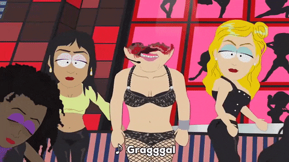
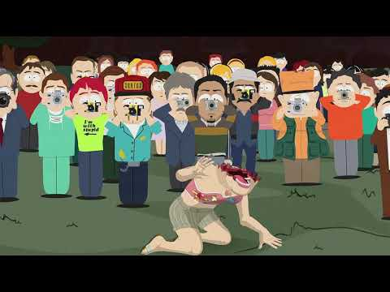

 
 S12 E2
S12 E2
Britney's New Look
S12 E2Britney's New Look
Britney's New LookThis episode is really dark, like, really fucking dark. The message with how we treat our celebrities is shockingly still relevant today, and the way it is carried out is done super well. I think they may have went a tad bit overboard, but that could just be me. After hearing about all the crazy antics of Britney Spears, the boys hope to get a picture of her pissing on an animal (Butters dressed as a squirrel). Things quickly esculate as Britney shoots off half of her face due to being in a depressive state and mistaking the boys for her children. Still alive, now she has to continue to deal with the all-seeing public around her.
Britney isn't Barbara Streissand in any way, but Matt and Trey did her so dirty in this episode, but it also helps serve the purpose of further portraying the message. The end scene speaks for itself. The whole town being in a cult-like state is really disturbing and it succeeds in making the viewer feel this way. It represents what real life celebrities live through each day, but of course without the blatent satire. The scene where the boys help a disguised Britney through a bus station really demonstrates how hard it is for celebrities to even leave their homes without a breath of fresh air. Overall, the episode is more disturbing than funny.
I'm personally not the biggest fan of the episode, because of how disturbing it is, but that doesn't mean I don't appreciate the work behind this episode. The regret of the boys once Britney attempts suicide is disturbingly real, you can tell they regret their "harmless prank". It's still a good episode in the grand scheme of things, definetly miles above shitty episodes like A Million Little Fibers and Jackovasaurs. The only gripe I have with the episode is how one thing esculates to another, and I feel it goes a little bit too quickly. First Britney attempts to kill herself, then she's avoiding townsfolk, then they all become zombies to the media, and then they reveal that they need to kill her. All in the span of 10 to almost 15 minutes, and an episode is always 20 minutes. If it had some time to develop, like with how they handled the zombie-esque scenario in Night of the Living Homeless, maybe I would like this episode more. But because of being overly dark and quick with its plot points, it's lower on the season 12 rankings.
I really like Butters in this episode, as he's done being the butt of every joke and having to be potentially pissed on by Britney Spears. Even though he isn't too impressed, he still complies, dressing up in the costume and proclaiming 'I'm a squirrel!' when confronted by Britney herself. I know he had a minor role in this episode, but it was one of the more memorable moments to me and served as a bit of comic relief in a tragic series of events.
Overall, it's a okay episode. Certainly one of the darkest episodes of the series, but it's still a good episode and isn't one that I generally hate.